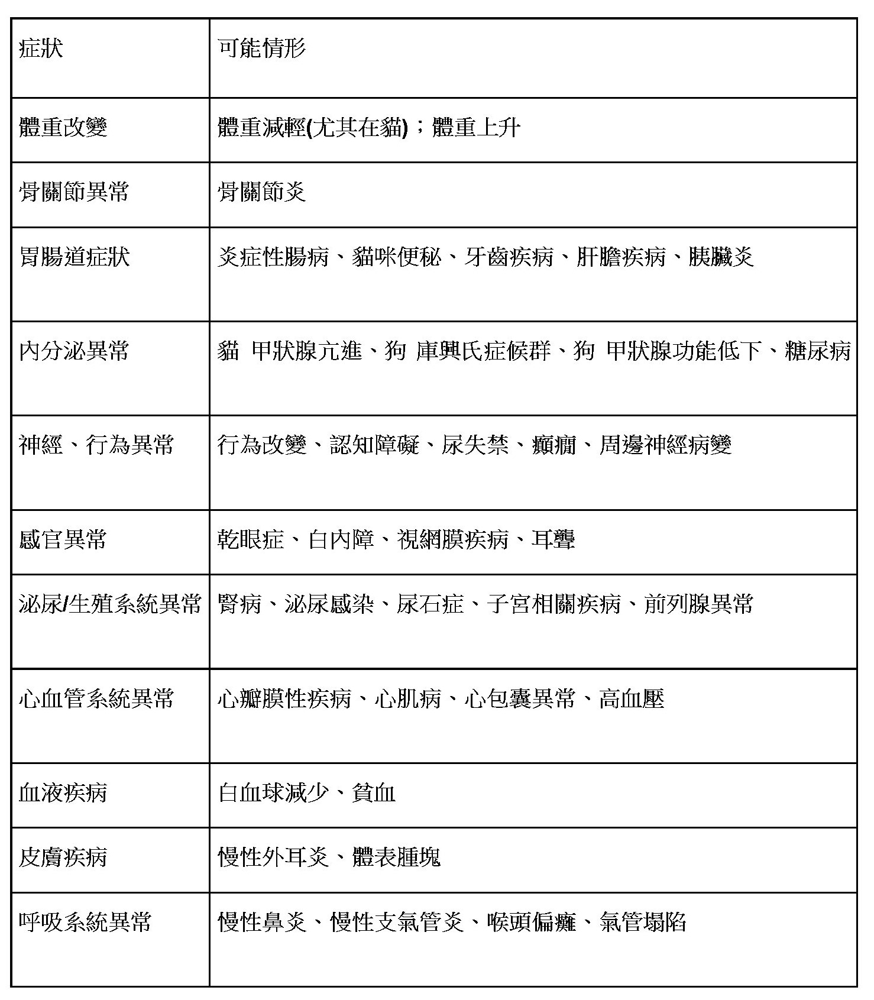

2022-12-13
毛小孩的健康老年生活
我家毛小孩幾歲算步入老年呢? 事實上每個物種與品種間對於老年的定義皆有差異。但目前對於「老年」的共識，狗狗約6-7歲以上認為老年；而貓咪則認為大於7-11歲為老年。毛小孩進入高齡後，或是已經患有其他疾病的毛小孩則更需要在日常生活當中多注意身體狀況，觀察有沒有症狀上的改變或是哪個部位有新出現的疼痛情況，症狀和可能發生的情形如下：

當然，想要發現毛小孩身上隱藏的危機，完整的病史與身體檢查是無可替代的，健檢最主要的目的是希望藉由健檢的機會發現毛小孩身上隱藏的疾病，尤其是當疾病尚處在亞臨床期階段時常常難以發現，當發現異常時我們就有機會及早進行干預或治療。
健康的毛小孩也可以藉由健檢的機會建立起個體健康時期的基準數值，並可與未來的檢查狀況做比較。健檢項目包含：基礎理學檢查、血液學檢查、傳染病檢查、影像學檢查。
如果我家寶貝已經有慢性疾病，還需要健檢嗎?
這個答案是一定的，首先，我們理解一下一般健檢對於老年毛小孩或是已經患有其他疾病的毛小孩更加重要，甚至在日常生活當中我們也須更注意毛孩的身體狀況。好比來說，在老年毛小孩發生惡性腫瘤的機會或是潛在已有慢性退化疾病的機會比起其他年齡層會高許多。可怕的是在疾病初期，往往難以被察覺，或是疾病進展的速度超出預期，因此固定六個月健檢一次是目前普遍較為建議的共識。 健檢過程我們一樣會執行完整的理學檢查，並向您了解毛小孩過去詳細的疾病史 ，並會特別詢問有沒有症狀上的改變或是哪個部位有新出現疼痛情形。血液生化檢查部分除了基本肝臟與腎臟指數追蹤外，建議增加其他項目，如：電解質、鈣、磷以及酸鹼狀況。健檢結果出來後，我們會詳細解釋報告內容給您。會和您進行仔細地溝通，目的是知道毛小孩接下來需要注意的地方、可能遇到的問題、認識疾病及走向，透過對話理解毛孩父母對於治療的期待及照顧能力，最後統整這些資訊制定出合適的醫療計畫、追蹤計畫。
毛小孩不會說話，伊甸動物醫院陪你一起守護他/她們的健康